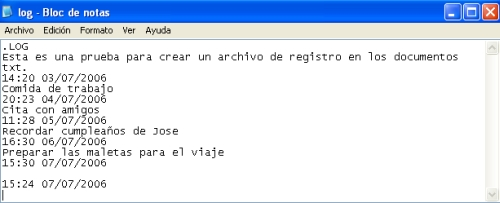
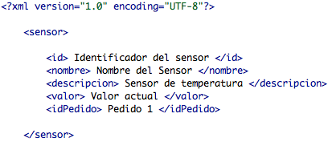
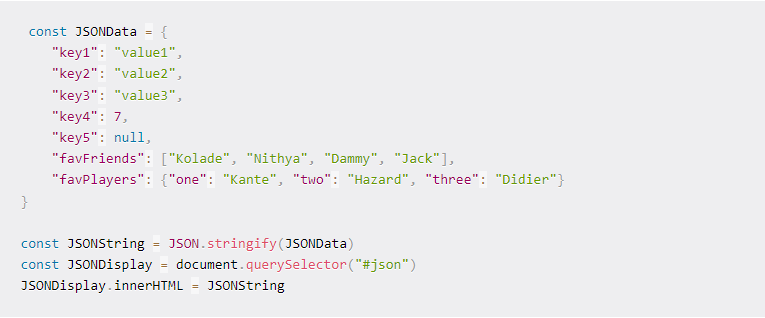
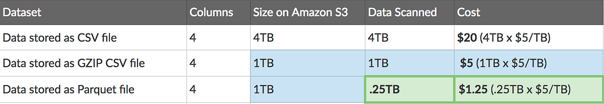

By Nicolas Castro Ingeniero de Software
Archivos txt
Los archivos de texto TXT son cadenas de texto. Se consideran archivos de plataforma genérica y pueden abrirse en casi cualquier sistema operativo, incluidos los dispositivos móviles.
La extensión TXT significa "archivo de texto" y sustituye a la antigua denominación "archivo plano". Este archivo informático está estructurado como una serie de líneas de texto. El final de un archivo suele indicarse con un símbolo especial que se coloca tras la última línea de texto como marcador de "fin de archivo".
Caractaristicas
Un archivo tipo texto es aquel que almacena información de texto plano, es decir que no contiene caracteres de control, sólo contiene caracteres imprimibles como letras, números y símbolos, por lo general del juego de caracteres ASCII. El estándar ASCII permite que los archivos de texto puedan ser intercambiados libremente y legible entre plataformas como Linux, Mac,Windows.
usos
Permite la creacion de documentos en forma de archivos TXT, articulos, informes, y escritos en general y por su simplicidad los archivos planos se utilizan para el inercambio de datos entre diferentes sistemas y aplicaciones.
ejemplo
imagen de un archivo txt
Archivos xml
Un archivo con la extensión .xml consiste en un archivo de lenguaje marcado extensible (XML)
XML es la abreviación de la expresión "Extensible Markup Language", lo que podría traducirse como “Lenguaje de Marcas Extensible”. Se trata de un lenguaje utilizado para estructurar la información en cualquier documento que contenga texto como por ejemplo los archivos de configuración de una aplicación específica o una base de datos.
Caractaristicas
Una de las caracteristicas principales es la creacion de etiquetas propias además de ofrecer la posibilidad de asignar atributos a las mismas, y tambien incluir metadatos en el mismo documento, que permite que sea indexado de manera más efectiva por los motores de búsqueda
usos
Estos archivos pueden contener texto, números, fechas, imágenes, enlaces a otros archivos. y son ampliamente utilizados en aplicaciones web para el intercambio de datos bases de datos, documentos de configuración, archivos de intercambio de datos y más.
ejemplo
imagen de un archivo xml
Archivos JSON
JSON, que significa (JavaScript Object Notation)

JSON es un archivo que contiene una serie de datos estructurados en formato de texto y se usa para transferir información entre sistemas.
Es una notación para la transferencia de datos que sigue un estándar específico. Por eso, puede emplearse en diferentes lenguajes de programación y de sistemas.
- Clave: corresponde al identificador del contenido. Por eso, debe ser una string delimitada por comillas.
- Valor: representa el contenido correspondiente y puede contener los siguientes tipos de datos: string, array, object, number, boolean o null.
Los datos contenidos en un archivo en formato JSON deben estructurarse por medio de una colección de pares con nombre y valor :
Caractaristicas
La simplicidad con que los datos están estructurados en el formato JSON permite que sea utilizado en cualquier tipo de lenguaje de programación. Además, puede manipularse en diferentes plataformas, como Windows, macOS, Linux, y en varios tipos de sistemas, como en aplicaciones web y aplicaciones móviles.
usos
JSON está en el diseño de sitios web, pero tambien lo podemos emplear para la creación de aplicaciones móviles y programas computacionales o incluso para la transferencia de documentos. Esta herramienta es tan versátil que podríamos asegurar que está prácticamente en todos lados.
ejemplo
imagen de un archivo JSON
Archivos parquet
Parquet es un formato de almacenamiento columnar

Es un formato de almacenamiento en columnas que proporciona optimizaciones para acelerar las consultas, es un formato de código abierto (open source) que ofrece alternativas de almacenamiento, codificación, compresión y lenguajes de programación, entre otras.
- Row Group: conjunto de filas en formato columnas.
- Column Chunk: de esta forma, los datos de una columna en un grupo se pueden leer de manera independiente para optimizar las lecturas.
- Page: hace referencia al almacenamiento de los datos.
Un archivo de Apache Parquet está compuesto por tres piezas:
Caractaristicas
Está diseñado para admitir esquemas de compresión y codificación muy eficientes tambien Genera menores costos de almacenamiento para archivos de datos y maximiza la efectividad de las consultas de datos
usos
Este tipo de archivo se utiliza para el analisis de big data, ya que permite un procesamiento mas eficiente de grandes conjuntos de datos, tambien se puede utilizar en varios lenguajes de programación como Phyton, Java, etc.
ejemplo
imagen de un archivo PARQUET
a continuacion...
Juego del Chispum
Vamos!!!
chispum.js
function chispum(any){
if(any % 3 == 0 && any % 5 == 0){
return "chispum";
}else if(any%3 == 0){
return "chis";
} else if(any%5 == 0){
return "pum";
}
return any;
}
console.log("Es un Chis si recibe un multiplo de 3 y Pum si es multiplo de 5 y recibe ChisPum si es multiplo de los dos")
console.log("Es un... => "+chispum(8));
module.exports = chispum;
chispum.test.js
const chispum= requiere("./chispum");
describe("chispum",()=>{
test("deberia escribir 1 y dar un ok si recibe 1",()=>{
const expected=1;
const result =1(1);
expect(expected).toBe(result);
})
test("deberia recibir un chis si recibe 3",()=>{
const expected="chis";
const result =chispum(3);
expect(expected).toBe(result);
})
test("deberia recibir un chis si recibe 5",()=>{
const expected="pum";
const result =chispum(5);
expect(expected).toBe(result);
})
test("deberia recibir un chispum si recibe un miltiplo de 3 y 5",()=>{
const expected="chispum";
const result =chispum(15);
expect(expected).toBe(result);
})
});